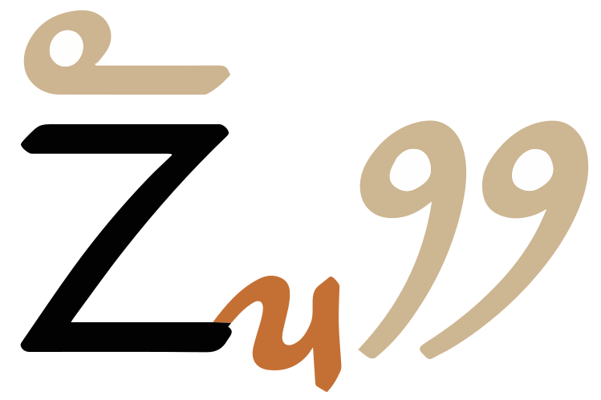
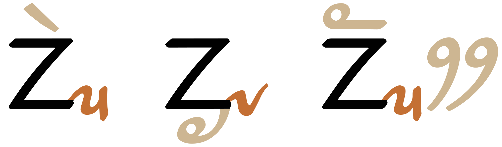

This page brings together basic information about the Limbu script and its use for the Limbu language. It aims to provide a brief, descriptive summary of the modern, printed orthography and typographic features, and to advise how to write Limbu using Unicode.
The Limbu language is spoken by around 400,000 people in Nepal and Sikkim (India),@Ethnologue,https://www.ethnologue.com/language/lif/ however the speakers usually write in Nepali using the Devanagari script. Limbu can also be written in a version of the Devanagari script. It has been one of the official languages of Sikkim since 1981. It is currently taught in schools as a language option in Sikkim, and Nepal has a newspaper, published in Limbu in Kathmandu since 1995.
ᤃᤠᤰᤌᤢᤱ ᤐᤠ᤺ᤴ
The origins of the script are unknown, but local folklore says that it was invented by King Sirijanga Hang in the 9th century, before falling out of use. It was reintroduced in the 1700s by and cultural hero Te-ongsi Sirijunga Xin Thebe. The modern script was developed in 1925 in Kalimpong, and was revised by Subba in the 1970s.
The Limbu script is an abugida, however an optional vowel sign exists for the inherent vowel sound , which would turn it into an alphabet. When used as an abugida, each consonant has an inherent vowel. See the table to the right for a brief overview of features for the modern Limbu orthography.
Limbu text runs from left to right in horizontal lines. Words are separated by spaces. The orthography is unicameral.
Consonant clusters and gemination are generally indicated using a syllable-final mark followed by a full-sized onset consonant. Syllable-final consonants for loan or foriegn words may be written with a full-sized consonant with a line below. There are no conjuncts.
The Limbu script is an abugida with one inherent vowel, pronounced ɔ, however a diacritic is sometimes used to write that sound, in which case it becomes more like an alphabet.
Only one vowel mark is used per consonant, so there are no multipart vowels.
Long vowel sounds are indicated either by adding a double dot mark above a syllable, or by making the syllable-final consonant a full-sized character with 193B below.
Standalone vowel sounds are written using the vowel-carrier 1900 and a vowel sign. There are no independent vowels.
Punctuation includes that used for the Latin script, but with some extras. The full stop acts as a comma, and the sentence delimiter is the double danda. Limbu has its own set of digits.
Line-breaking and justification are primarily based on inter-word spaces.
Character index
Letters
Show
Consonants
ᤁ␣ᤂ␣ᤃ␣ᤄ␣ᤅ␣ᤆ␣ᤇ␣ᤈ␣ᤋ␣ᤌ␣ᤍ␣ᤎ␣ᤏ␣ᤐ␣ᤑ␣ᤒ␣ᤓ␣ᤔ␣ᤕ␣ᤖ␣ᤗ␣ᤘ␣ᤙ␣ᤛ␣ᤜ
Vowels
ᤀ
Not used by modern Limbu
ᤉ␣ᤊ␣ᤚ␣ᤝ␣ᤞ
Combining marks
Showᤠ␣ᤡ␣ᤢ␣ᤣ␣ᤤ␣ᤥ␣ᤦ␣ᤧ␣ᤨ␣ᤩ␣ᤪ␣ᤫ␣ᤰ␣ᤱ␣ᤳ␣ᤴ␣ᤵ␣ᤶ␣ᤷ␣ᤸ␣᤹␣᤺␣᤻
Not used by modern Limbu
ᤲ
Punctuation
Show‘␣’␣“␣”␣␣॥␣᥄␣᥅
ASCII
;␣:␣,␣.␣?␣!␣(␣)
Symbols
Show᥀
Numbers
Show᥆␣᥇␣᥈␣᥉␣᥊␣᥋␣᥌␣᥍␣᥎␣᥏
Other
Show
To be investigated
%␣[␣]␣§␣␣␣–␣—␣†␣‡␣…␣‰␣′␣″
Items to show in lists
Phonology
The following represents the general repertoire of the Sunwar language.
Click on the sounds to reveal locations in this document where they are mentioned.
Phones in a lighter colour are non-native or allophones. Source Wikipedia.
Vowel sounds
Plain vowels
Diphthongs
The sound a may produced phonetically as ə. It is placed in the chart in a position that indicates the general area of production. Other allophones include ʌ for ɔ.
ɔ following a consonant is normally not written, but is seen as an inherent part of the consonant letter, so kɔ is written by simply using the consonant letter.
However, the sound can be written using the vowel sign 1928, just as any other vowel sound. Consistent use of this combining mark would turn Limbu into an alphabet, rather than an abugida, but its use is optional, and not particularly common.
Combining marks used for vowels
ᤁᤡ
kiU+1901 LETTER KA, U+1921 VOWEL SIGN I
Limbu uses the following dedicated combining marks for vowels, including 2 diphthongs.
ᤡ␣ᤢ␣ᤣ␣ᤥ␣ᤧ␣ᤨ␣ᤠ␣ ␣ᤤ␣ᤦ
1928 is the optional vowel sign mentioned earlier that can be used to represent what is normally the inherent vowel.
Five vowel signs are spacing marks, meaning that they consume horizontal space when added to a base consonant.
Standalone vowels
ᤀ
Limbu represents standalone vowels using the vowel-carrier, ᤀ, combined with a vowel sign.
ᤀᤧᤄᤠᤱ
ᤀᤠᤀᤡᤴ
There are no independent vowels, but the vowel-carrier without any vowel sign represents ɔ, the sound of the inherent vowel.
Circumgraphs
ᤁᤦ
kawU+1901 LETTER KA + U+1926 VOWEL SIGN AU
Two vowels are produced by a single combining character with visually separate parts, that appear on different sides of the consonant onset.
ᤥ␣ᤦ
The combining mark is always stored after the base consonant. The rendering process places the glyphs around the base consonant, as needed.
When a conjunct follows a medial consonant the top glyph appears above the syllable-initial consonant, while the right-hand glyph appears to the right of the medial consonant.

A circumgraph whose glyphs are arranged relative to an onset consonant cluster.
193A is used above a vowel sign to indicate length in open syllables, and also closed syllables in Nepal.
ᤕᤣ᤺ᤰᤕᤠ
ᤐᤠ᤺ᤴ
In Sikkim, long vowels in closed syllables are commonly indicated by using a full-sized consonant in final position with 193B below it, rather than the final consonant mark.
ᤐᤠᤏ᤻
ᤆᤥᤁ᤻ᤕᤠᤔ᤻ᤒᤰ t͡ʃokjambɔk
In cases where this is used to kill the vowel of a consonant that doesn't have a final mark form, the length is ambiguous.
ᤏᤧᤛ᤻ᤛᤧ
Nasalisation
Limbu has no glyphs to indicate nasalisation.
Vowel suppression
᤻
193B below a consonant indicates that the inherent vowel is not pronounced.
Vowel sounds to characters
This section maps Limbu vowel sounds to common graphemes in the Limbu orthography.
The right-hand column shows standalone vowel representations. The absence of an entry in the right column doesn't necessarily mean that that item doesn't occur; it means that an example was yet been found while compiling this list.
Click on a grapheme to find other mentions on this page (links appear at the bottom of the page). Click on the character name to see examples and for detailed descriptions of the character(s) shown.
Plain vowels
i
1921
ᤌᤡᤰ
1900 1921
ᤀᤡᤰᤗᤣᤰ
iː
1921 193A
1921 25CC 193B in Sikkim.
u
1922
ᤔᤢᤰᤁᤢᤶᤒᤠ
uː
1922 193A
1922 25CC 193B in Sikkim.
e
1923
ᤔᤧᤶᤒᤣ
eː
1923 193A
ᤕᤣ᤺ᤰᤕᤠ
1923 25CC 193B in Sikkim.
o
1925
ᤜᤥᤵ
oː
1925 193A
1925 25CC 193B in Sikkim.
ɛ
1927
ᤔᤧᤶᤒᤣ
1900 1927
ᤀᤧᤄᤠᤱ
ɛː
1927 193A
1927 25CC 193B in Sikkim.
ɔ
Inherent vowel
ᤋᤖᤣᤔᤠ
1928 is an optional alternative.
1900
a
1920
ᤜᤠᤖᤠ
1900 1920
ᤀᤠᤏᤡ
aː
1920 193A
ᤕᤠ᤺ᤴ
1920 25CC 193B in Sikkim.
Diphthongs
ai
1924
au
1926
Consonants
Consonant summary table
The following table summarises the main consonant to character assigments.
Whereas the table just above takes you from sounds to letters, the following simply lists the basic consonant letters (however, since the orthography is highly phonetic there is little difference in ordering).
A few characters were used in earlier versions of the script, but are now obsolete.
ᤉ␣ᤊ␣ᤚ␣ᤝ␣ᤞ
Onsets
ᤫ␣ᤩ␣ᤪ
Consonant clusters in syllable onsets are written by adding one of 3 medial consonant marks to the initial consonant.
ᤆᤫᤠ
ᤔᤧᤴᤇᤩᤠ
Although the vowel sign follows the medial consonant in memory, it is displayed over the syllable-initial consonant. It is incorrect to type the vowel between the initial consonant and the medial.
Finals
ᤵ␣ᤳ␣ᤰ␣ᤶ␣ᤴ␣ᤱ␣ᤷ␣ᤸ␣ᤲ␣᤹
Syllable-final consonants are normally represented by the 9 small forms above, which are implemented as combining marks. Finals are always unvoiced, unreleased and pronounced with a glottal stop.u
ᤌᤡᤰ
ᤔᤢᤰᤁᤢᤶᤒᤠ
ᤀᤠᤳᤋᤡᤴ
ᤃᤠᤰᤌᤢᤱ ᤐᤠ᤺ᤴ
1932 is an alternative to 1931, but is not used as much in modern texts.
When a (normally foreign or loan) word ends with a consonant for which there is no corresponding small form, the final consonant is written using the full-sized glyph but has 193B below.
In Sikkim, this approach is common, even for consonants that do have a combining mark, as a way to indicate vowel length in closed syllables. See vowellength.
Consonant clusters
Limbu has no conjunct forms for consonant clusters.
In most cases, consonant clusters in Limbu occur across syllable boundaries; in which case, they involve a final consonant combining mark followed by a normal onset consonant.
ᤏᤧᤳᤇᤡ
ᤗᤣᤵᤔᤡ
ᤃᤠᤰᤌᤢᤱ
In other cases, the consonant without a following vowel is indicated using 193B. This may happen when the Limbu repertoire doesn't have a combining mark for a syllable-final sound, such as in foreign or loan words.u It may also occur, in Sikkim, where 193B is used to indicate vowel length (see vowellength).
ᤏᤧᤛ᤻ᤛᤧ
Consonant length
Consonant gemination is indicated in the same way as ordinary consonant clusters.
ᤔᤢᤰᤁᤢᤶᤒᤠ
ᤏᤧᤛ᤻ᤛᤧ
Consonant sounds to characters
This section maps Limbu consonant sounds to common graphemes in the Latin orthography.
The middle column shows medial consonants. The right-hand column shows syllable codas.
Click on a grapheme to find other mentions on this page (links appear at the bottom of the page). Click on the character name to see examples and for detailed descriptions of the character(s) shown.
This section offers advice about characters or character sequences to avoid, and what to use instead. It takes into account the relevance of Unicode Normalisation Form D (NFD) and Unicode Normalisation Form C (NFC).
Although usage is recommended here, content authors may well be unaware of such recommendations. Therefore, applications should look out for the non-recommended approach and treat it the same as the recommended approach wherever possible.
Vowel signs
The same (or close) visual effect may be achieved by typing the 2 circumgraphs and one other vowel sign as a single character, or as two characters.
Precomposed (recommended)
Decomposed (not recommended)
ᤥ
ᤠᤣ
ᤦ
ᤠᤤ
ᤤ
ᤣᤣ
The single code point per vowel sign is recommended because there is no equivalence in Unicode Normalisation Form D (NFD) and Unicode Normalisation Form C (NFC). This means that searching and other types of data processing may fail if the vowel signs are written in a non-standard way.
Codepoint sequences
Letters should be typed in the order of pronunciation.
Medial consonants should be written immediately after the initial consonant in the syllable, and vowel signs should follow both, even though the vowel sign may be positioned over the initial consonant for display. (That will be rendered by the font.)
Likewise, syllable-final consonants should follow any vowel sign.
Numbers, dates, currency, etc
Digits
Limbu has its own set of digits, with a decimal base.
᥆␣᥇␣᥈␣᥉␣᥊␣᥋␣᥌␣᥍␣᥎␣᥏
Text direction
Limbu text is written horizontally, with lines that flow from top to bottom.
Since the letters are all the same height, there tends not to be much variation in placement of combining marks. The placement of 193A relative to other combining marks may need some attention.
Vowel glyphs that are placed above and below a base are displayed relative to the syllable-initial consonant, rather than the medial consonant that they follow in memory. This is also the case for circumgraphs, where the parts of the vowel sign have to be split around the medial.

Vowel glyphs that are placed above and below a base are displayed relative to the syllable-initial consonant, rather than the medial consonant that they follow in memory.
Graphemes
In Limbu text, grapheme clusters typically correspond to whole syllables. Where combining marks appear, the combination of base and combining mark still fits within the definition of a grapheme cluster.
Grapheme clusters
Base Mark?
Each syllable onset and following combining marks typically constitute a single grapheme cluster. However, when a syllable-final sound is written using a full-sized consonant with 193B that will constitute a separate grapheme cluster.
Punctuation & inline features
Word boundaries
Words are separated by spaces.
Phrase & section boundaries
,␣.␣;␣:␣॥␣᥅␣᥄
Basic phrase and section boundaries in Limbu use ASCII punctuation.
phrase
,
.
;
:
sentence
॥
᥅
᥄
The dot that looks like a full stop is used as a comma.
Bracketed text
(␣)
Limbu commonly uses ASCII parentheses to insert parenthetical information into text.
Limbu texts may use quotation marks around quotations. Of course, due to keyboard design, quotations may also be surrounded by ASCII double and single quote marks.